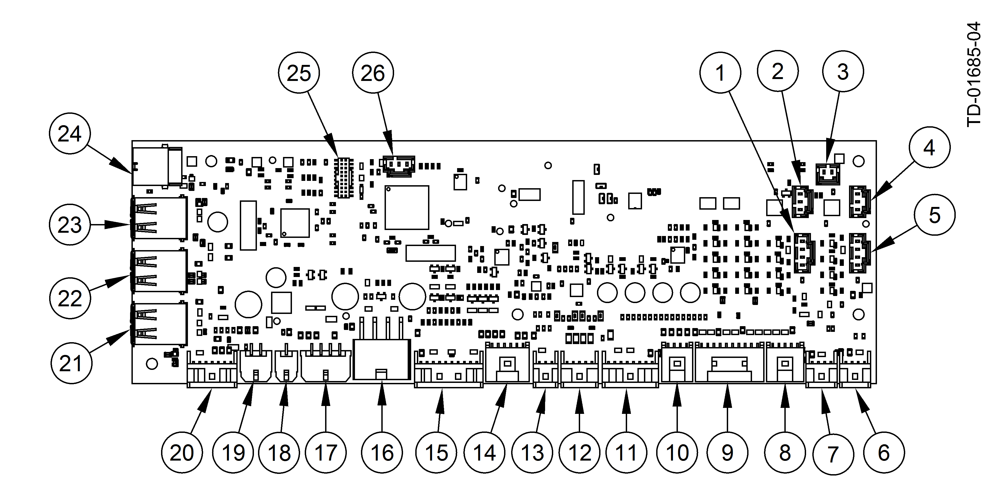
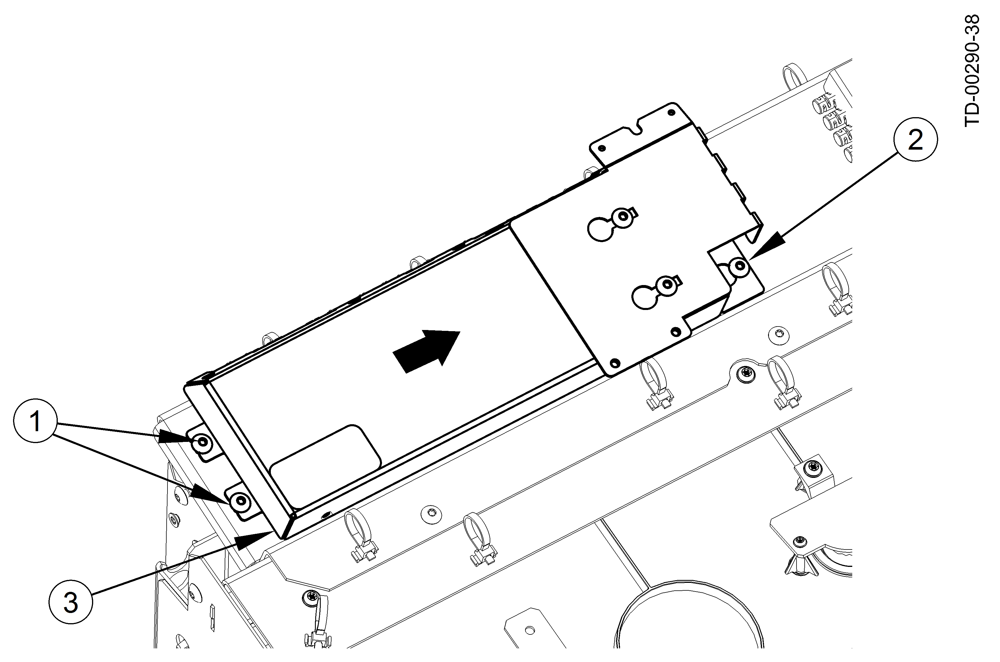

Removal
Perform the following steps to remove the fascia interface board.

Be sure to take suitable precautions when working on an open system (e.g. by covering components where necessary) so that rain cannot enter the open system.
- Unlock and completely extend the fascia on its slide assemblies.
- Using T/SOP, perform the system shutdown procedure (refer to Starting up / Shutting down the System ).
- Make a note of the cable connections to the fascia interface board and then disconnect the cables (Fascia Interface Board Connectors).
 Fascia Interface Board Connectors Item
Connector
Description
1
J22
U13XMC Debug
2
J24
U13XMC Debug
3
J26
Debug Serial
4
J25
U14XMC Debug
5
J23
U14XMC Programming
6
J19
UART Light Exp.
7
J18
UART to Chassis Interface Board
8
J17
Red/Green/Blue Lights 2
9
J16
Red/Green/Blue Lights 1
10
J15
Door
11
J14
Headphone Out
12
J13
Audio Speaker Out
13
J12
Audio In
14
J11
Lighting
15
J10
Fans
16
J9
Supply In
17
J8
Spare 2
18
J7
Display
19
J6
Shutter
20
J5
Spare
21
J3
USB-A
22
J1
USB-A
23
J2
USB-A
24
J4
USB-B
25
J20
JTAG K24
26
J21
U21K24 Debug
- Remove the two screws securing the FIB strain relief bracket onto the FIB (fascia interface board).
- If the optional 7-port hub is present, disconnect the cables from the hub.
- If the optional 7-port hub is present, remove the two screws from the top of the hub and remove the hub from the FIB.
- Loosen the one screw in the keyhole slot that secures the fascia interface housing to the fascia (Removing the Fascia Interface Board from the Fascia).
- Loosen two screws that secure the fascia interface housing to the fascia.
- Slide the housing and remove the housing from the fascia.
 Removing the Fascia Interface Board from the Fascia 1
Loosen two screws
2
Loosen one screw in keyhole slot
3
Fascia interface board housing
- Remove the two screws that mount the cover for the fascia interface board (Removing the Fascia Interface Board ).
- Remove the cover from the housing.
- Remove the screws that mount the fascia interface board to the housing.
- Remove the fascia interface board from the housing.
1 | Fascia interface board cover |
2 | M3 x 5 panhead screws (7) |
3 | Fascia interface board housing |
4 | Fascia interface board |